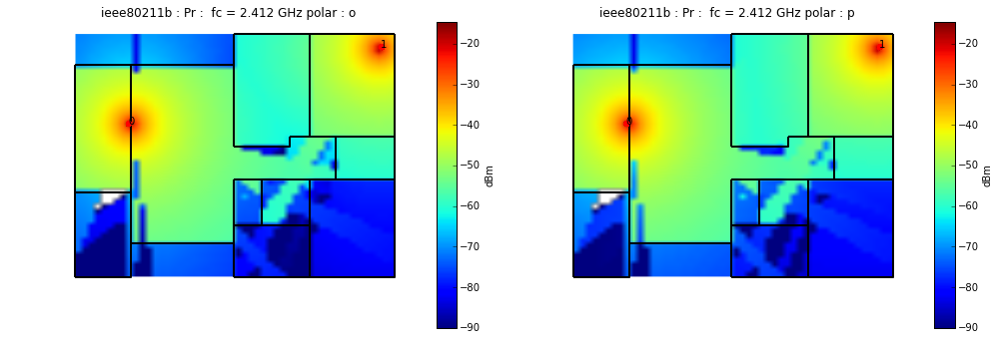
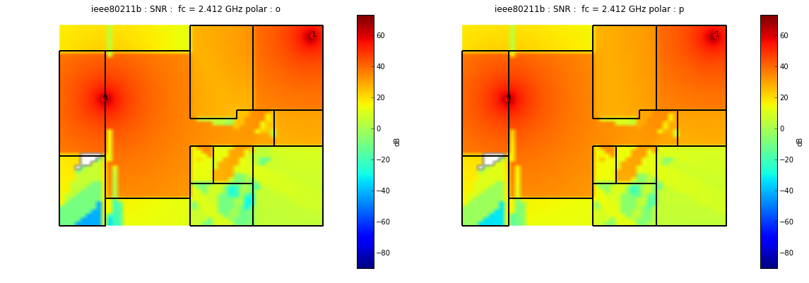
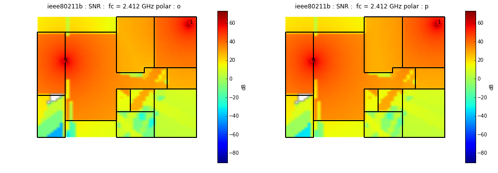
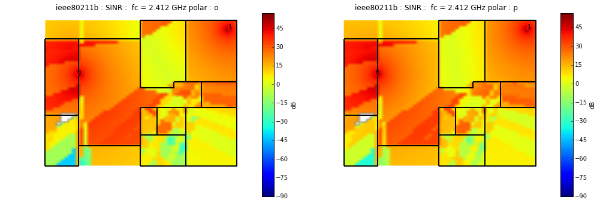
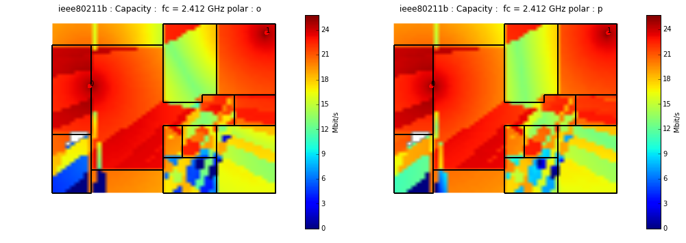

Example of Utilisation of Coverage
from pylayers.antprop.coverage import *
WARNING:traits.has_traits:DEPRECATED: traits.has_traits.wrapped_class, 'the 'implements' class advisor has been deprecated. Use the 'provides' class decorator.
<matplotlib.figure.Figure at 0x2acdb3c696d0>
Layout file : homeK_vf.ini
-----list of Access Points ------
name : room1
p : (2.1, 6.0, 1.2)
PtdBm : 0
channels : [11] 2.462 : [2.451,2.473]
sensdBm : -94
nant : 1
On : True
name : room2
p : (12, 9.0, 1.2)
PtdBm : 0
channels : [11] 2.462 : [2.451,2.473]
sensdBm : -94
nant : 1
On : True
-----Rx------
temperature (K) : 300
noisefactor (dB) : 13
--- Grid ----
mode : full
nx : 50
ny : 50
fig=figure(figsize=(10,10))
f,a=C.L.showGs(fig=fig)
---------------------------------------------------------------------------
NameError Traceback (most recent call last)
<ipython-input-5-308e8a4b41f8> in <module>()
----> 1 fig=figure(figsize=(10,10))
2 f,a=C.L.showGs(fig=fig)
NameError: name 'figure' is not defined
Available Material
-------------------
STONE (8) |epsr|=8.70 sigma (S/m)=3.00
CONCRETE (5) |epsr|=5.50 sigma (S/m)=0.05
PLASTER (3) |epsr|=8.00 sigma (S/m)=0.04
METAL (-1) |epsr|=1.41 sigma (S/m)=1000.00
PLATRE-57GHz (10) |epsr|=3.10 sigma (S/m)=0.00
AIR (1) |epsr|=1.00 sigma (S/m)=0.00
GLASS (4) |epsr|=3.80 sigma (S/m)=0.00
WOOD (7) |epsr|=2.84 sigma (S/m)=0.00
BRICK (2) |epsr|=4.10 sigma (S/m)=0.30
SEA_WATER (9) |epsr|=81.00 sigma (S/m)=4.00
REINFORCED_CONCRETE (6) |epsr|=8.70 sigma (S/m)=3.00
ABSORBENT (0) |epsr|=1.00 sigma (S/m)=0.00
Slab file name : slabDB.ini
Material file name : matDB.ini
-----------------------------
WINDOW_GLASS : GLASS | [0.003]
PLASTERBOARD_7CM : PLASTER | [0.07]
WALL : BRICK | [0.07]
AIR : AIR | [0.02]
WINDOW : GLASS | AIR | GLASS | [0.005, 0.005, 0.005]
METALIC : METAL | [0.1]
PLASTERBOARD_14CM : PLASTER | [0.14]
DOOR : WOOD | [0.03]
FLOOR : REINFORCED_CONCRETE | [0.1]
METAL : METAL | [0.1]
PARTITION : PLASTER | [0.1]
CONCRETE_20CM3D : CONCRETE | [0.2]
PLASTERBOARD_10CM : PLASTER | [0.1]
CEIL : REINFORCED_CONCRETE | [0.1]
CONCRETE_6CM3D : CONCRETE | [0.06]
CONCRETE_15CM3D : CONCRETE | [0.15]
3D_WINDOW_GLASS : GLASS | AIR | GLASS | [0.005, 0.005, 0.005]
WALLS : BRICK | [0.15]
WOOD : WOOD | [0.04]
CONCRETE_7CM3D : CONCRETE | [0.07]
PILLAR : REINFORCED_CONCRETE | [0.3]
ABSORBENT : ABSORBENT | [0.1]
array(['x08lxcbdxcd*x00x00x08lxcbdxcd*x00x00xb0xc2x14x05',
'WALL', 'WALL', 'WALL', 'WALL', 'PARTITION', 'WALL', 'WALL', 'WALL',
'WALL', 'WALL', 'WALL', 'WALL', 'WALL', 'PARTITION', 'WALL', 'WALL',
'PARTITION', 'WALL', 'WALL', 'WALL', 'WALL', 'PARTITION', 'WALL',
'WALL', 'WALL', 'WALL', 'WALL', 'WALL', 'PARTITION', 'WALL', 'WALL',
'WALL', 'WALL', 'WALL', 'ABSORBENT', 'AIR', 'WALL', 'WALL', 'WALL',
'WALL', 'WALL', 'WALL', 'WOOD', 'PARTITION', 'WINDOW', 'DOOR',
'DOOR', 'WALL', 'WALL', 'DOOR', 'DOOR', 'DOOR', 'DOOR', 'DOOR',
'METAL', 'AIR', 'AIR', 'AIR'],
dtype='|S20')
fig=plt.figure(figsize=(14,8))
a1 = fig.add_subplot(121)
a2 = fig.add_subplot(122)
f,a = C.show(typ='pr',best=False,polar='o',vmin=-90,fig=fig,ax=a1)
f,a = C.show(typ='pr',best=False,polar='p',vmin=-90,fig=fig,ax=a2)

fig=plt.figure(figsize=(14,8))
a1 = fig.add_subplot(121)
a2 = fig.add_subplot(122)
f,a = C.show(typ='loss',best=False,polar='o',vmin=-90,fig=fig,ax=a1)
f,a = C.show(typ='loss',best=False,polar='p',vmin=-90,fig=fig,ax=a2)

fig=plt.figure(figsize=(14,8))
a1 = fig.add_subplot(121)
a2 = fig.add_subplot(122)
f,a = C.show(typ='snr',best=False,polar='o',vmin=-90,fig=fig,ax=a1)
f,a = C.show(typ='snr',best=False,polar='p',vmin=-90,fig=fig,ax=a2)

fig=plt.figure(figsize=(14,8))
a1 = fig.add_subplot(121)
a2 = fig.add_subplot(122)
f,a = C.show(typ='sinr',best=False,polar='o',vmin=-90,fig=fig,ax=a1)
f,a = C.show(typ='sinr',best=False,polar='p',vmin=-90,fig=fig,ax=a2)

fig=plt.figure(figsize=(14,8))
a1 = fig.add_subplot(121)
a2 = fig.add_subplot(122)
f,a = C.show(typ='capacity',best=False,polar='o',vmin=0,fig=fig,ax=a1)
f,a = C.show(typ='capacity',best=False,polar='p',vmin=0,fig=fig,ax=a2)
